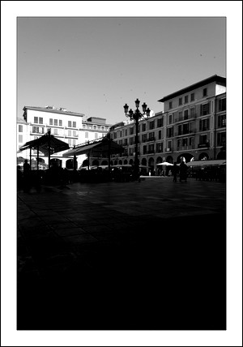

La actual Plaza Mayor
La Plaza Mayor
Antiguamente esta plaza estaba ocupada por el edificio de la Santa Inquisición, o como se le conocía, la Casa Negra, hasta que el año 1823 fue derruida. De ella ya solo queda la campana que da los cuartos en el Ayuntamiento y una de las puertas de la cárcel en la posesión de Alfabía, en Bunyola.
El espacio que dejó se convirtió, con el paso del tiempo, en uno de los mercados más importantes de Palma con puestos de venta de pescados y verduras. Más adelante, sufrió modificaciones y ampliaciones que le han dado el aspecto que tiene hoy en día. Y, no olvidemos que, en el ángulo norte de la plaza, nació uno de los personajes más importantes que ha dado Mallorca, el beato Ramón Llull.